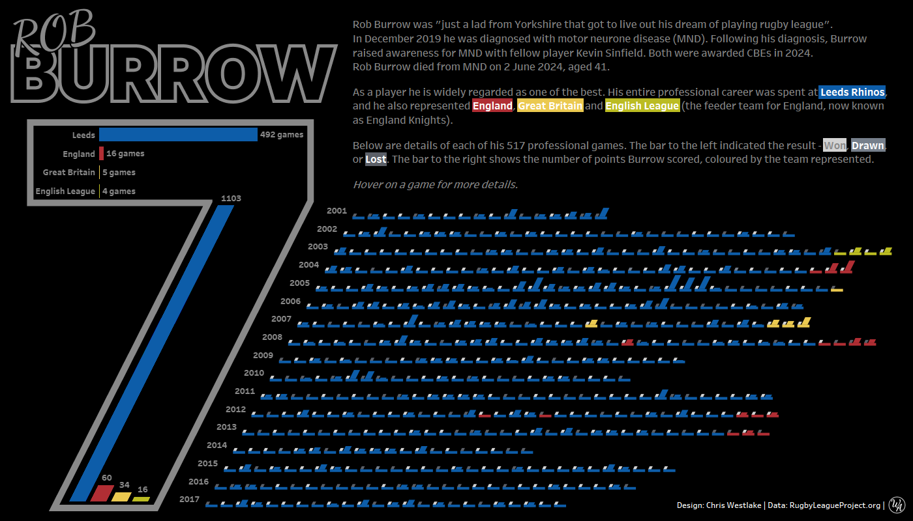
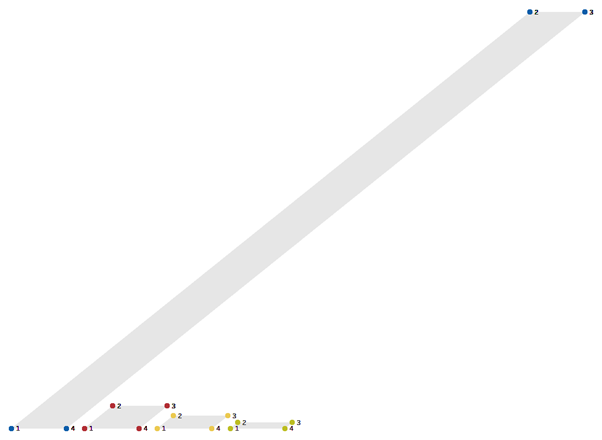
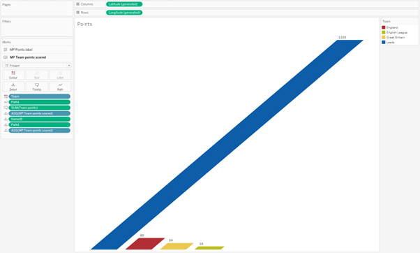
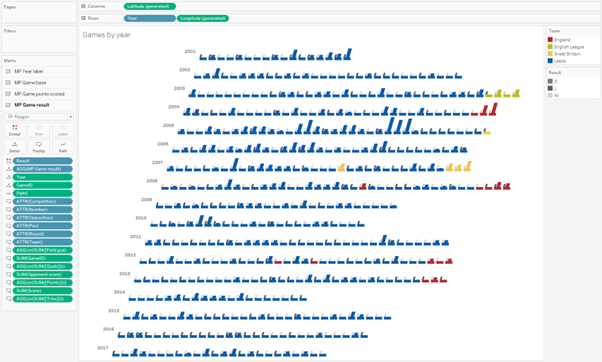

Last week I was surprised to see one of my visualisations featured as Viz of the Day on Tableau Public. This was the seventh time I had been recognised in this way and, because we love symmetry, the design of the viz was focussed on the number 7.
Rob Burrow was a legend of Rugby League. I grew up watching Rugby Union which is a slightly different version of the same sport. But even as a child growing up in the Union world, I knew that Rob Burrow was a legend. He was diagnosed with Motor Neurone Disease in December 2019, and sadly passed away in June this year aged just 41. This visualisation is a tribute to his playing career, spent entirely at Leeds Rhinos and wearing the number 7.
I got the inspiration for using a number as the basis for a visualisation design from this visualisation by Simon Beaumont. It looks at Alan Shearer’s incredible goal scoring record in the Premier League, and incorporates the number 9 as part of the main design. I’ve wanted to use this technique for a while, and this felt like the perfect opportunity.
The 7 in my visualisation comes from a background image, but the real technique here is in the slanted bars that follow the same angle as the slope of the number. In this blog I want to walk you through how to create these slanted bars, but please be careful how you use them. They are not always the right answer to a design problem!
I used Toan Hoang’s tutorial for tilted bar charts as the basis for this, though there are some differences in how I executed the technique here. Be sure to take a look at his blog post on this subject too!

Data Source
The data that I used in this visualisation comes from the Rugby League Project and is loaded into Tableau almost as it was downloaded. The only difference is that I have added a sort of index calculation that gives a number to each game within a year. This could have been done in Tableau with a table calculation, but I found it easier to insert it at this stage.
I have joined to this data a list of numbers from 1 to 4, with the field name Path. This will allow us to plot the corners of our slanted bars that will form the basis of the polygons used. It’s a bit of a hack because you can’t actually add a slope element to a bar chart in Tableau, but using polygons and map layers you can create anything you can imagine.
With our data model defined, we are now ready to jump into Tableau.
Slanting inside the 7
At the top of the number 7 you can see there is an ordinary horizontal bar chart showing the number of games Burrow played for each of the 4 teams he represented in his career. In the sloped part of the number is a bar chart showing the number of points he scored for each team. The bars here are, of course, not actually bars at all. The Path field we introduced earlier creates the corners for these bars that are stitched together to form the illusion of bars. To demonstrate how this works, below I have put dots on each of the corners of the bars and labelled them with the number assigned by the Path field.

There are a couple of calculations involved in mapping the coordinates of these corners.
Team Numeric assigns a number value to each team. I’ve done this here in descending order of the number of points scored. This will give us the horizontal component of our bars.
CASE [Team]
WHEN "Leeds" THEN 1
WHEN "England" THEN 2
WHEN "Great Britain" THEN 3
WHEN "English League" THEN 4
END
Team Points gives us the number of points Burrow scored for each of these teams. This will give us the vertical component of our bars.
CASE [Team]
WHEN "Leeds" THEN 1103
WHEN "England" THEN 60
WHEN "Great Britain" THEN 34
WHEN "English League" THEN 16
END
We will also need to include details of how much to tilt the bars and how thick we want them to be. We will create a couple of parameters to control these steps because it is nearly impossible to know the exact values we wish to use from within the sheet when we can’t see how it lines up with the background image. The parameter values I settled on for this sheet was a width of 0.75 and an angle of 82 degrees.
I have used map layers for this visualisation because of the flexibility they offer. A dual axis would have worked in this case where we only have 2 layers, but I’m never quite sure where I’ll end up when I start building a viz. Incorporating map layers from the beginning usually saves a lot of time – and we’ll see more than two layers in the next chart we build!
To access the map layers functionality in Tableau, we need to stitch together our X and Y coordinates using a MakePoint function. The height of the bars is the easiest to calculate, so we’ll start with the Y coordinates.
Team Points Scored – Y
IF SUM([Path1]) = 1 OR SUM([Path1]) = 4 THEN 0
ELSE SUM([Team points])/SUM({MAX([Team points])})
END
What this calculation is doing is saying that we want the Y value to be 0 for dots 1 and 4 on each of our polygons (the base line), and to show the number of points Rob Burrow scored for that team for all the other points. There is a bit of an issue that we have to allow for here. When using map layers your values are bound by the constraints of Latitude and Longitude, so all values must be between -90 and 90 on one axis and -180 and 180 on the other. To ensure this is the case, we divide the number of points by the highest points scored for any team. This will give us values between 0 and 1 as the result of this calculation. The relative positioning of marks is inconsequential as long as we label them correctly – the user will never know!
The X coordinated is a little bit more complicated. For the first point of our polygon we can simply use the numeric value we assigned to each team – Team Numeric. For the second point, we need to move to the right by a function of the rotational degrees that we set in our parameter before. We use the tangent trigonometric function for this, and multiply the result by the normalised team points value that we used for the height of the bars. For points 3 and 4 of our polygon, we use the same formulas as with 1 and 2, but shift to the right by our Bar Width parameter to give some width to the bars. The final calculation for this is:
Team Points Scored – X
IF SUM([Path1]) = 1 THEN
SUM([Team numeric])
ELSEIF SUM([Path1]) = 2 THEN
SUM([Team numeric]) - TAN(RADIANS([P - Degrees (teams)]))*SUM([Team points])/SUM({MAX([Team points])})
ELSEIF SUM([Path1]) = 3 THEN
SUM([Team numeric]) + [P - Bar Width (teams)] - TAN(RADIANS([P - Degrees (teams)]))*SUM([Team points])/SUM({MAX([Team points])})
ELSEIF SUM([Path1]) = 4 THEN
SUM([Team numeric]) + [P - Bar Width (teams)]
END
We then use a MakePoint function to pull these together, and add it to the sheet.
MAKEPOINT([Team Points Scored - X],[Team Points Scored - Y])
Changing the mark type to Polygon and adding the Path field to path, you should see the series of parallel slanted bars that we were aiming for. I have also added a layer that labels point 2 of our polygon with the number of points scored. This is done by just using the relevant part of our X coordinate calculation above and labelling the point with the marks card.

Slanting outside the 7
Once you understand the basics of this technique, you can apply it to other use cases a lot easier. The icons outside of the bold 7 on this dashboard each represent a game that Rob Burrow played. They are arranged in rows by year, and each display the result of the game and how many points Burrow scored. I have also added a bar across the bottom of each icon that grounds the visualisation and helps add some context, especially with games in which Burrow did not score any points.
The angle used for these bars is different so I have used a second angle parameter, as well as a second width parameter to control the width of the bars. I also scaled the starting X value for each year so that this followed the same angle as the 7 and the bars.
The result for this sheet was a bit more complicated than the other sheets in the dashboard. There a 4 layers in total – 3 providing the polygons used for the different bars, and 1 giving us the year label. There is also a large amount of information in the tooltips to add extra context and give the detail behind each game.

//
Overall, this was a really fun dashboard to pull together. It used a visual effect that I have been wanting to try for a few years, and was a great technical challenge. That being said, would I do it again? Probably not. While they look striking, slanted bars are not the best way to display this data and they go against a lot of best practices. This blog is not about best practices, but if you do try this yourself please use it with caution!
Another reason that I am unlikely to use this again is the amount of trial and error needed to make it look polished. It was a case of lining up the bars with the edge of the 7 and tweaking the angle parameter until it matched perfectly. I’m not sure there is an easier way than moving a few degrees one way, and a couple of degrees the other. It was tedious to say the least!
I would love to see the results if you do decide to use slanted bars in your own projects. As always, you can download my visualisation from Tableau Public and use it as a basis for building your own chart.
Take care // Chris